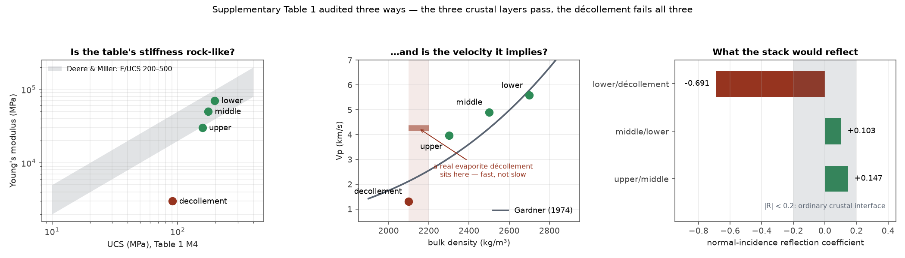
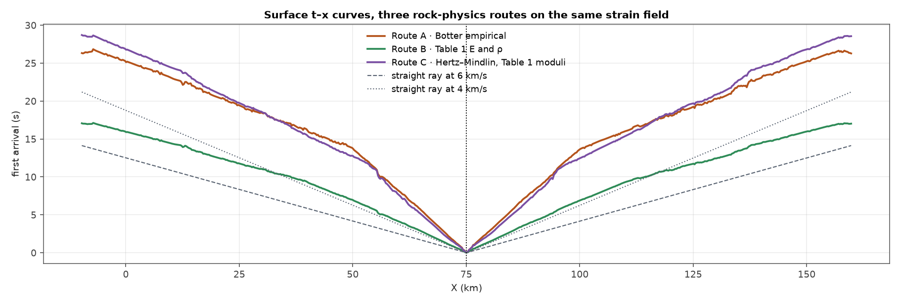
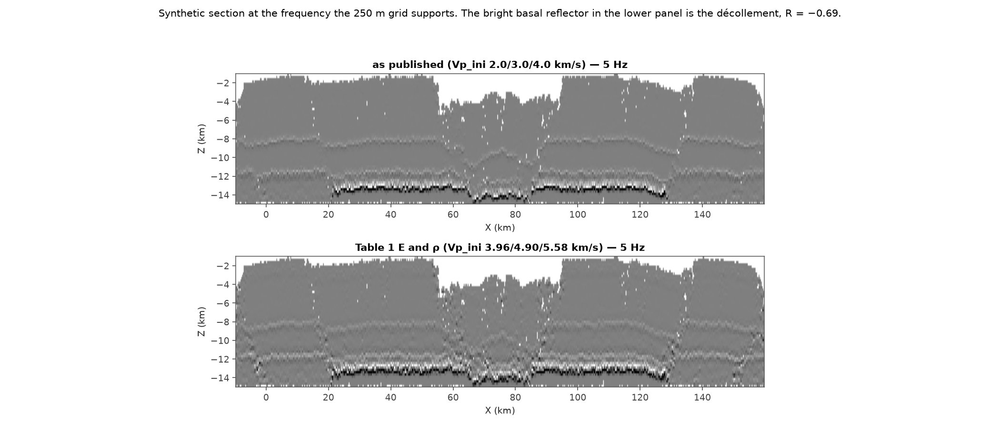

Which seismic observable remembers the strain?
A forward test from three-dimensional discrete-element mechanics to synthetic seismic, on a crustal extension model
Abstract
Discrete-element models of the crust are interpreted through their mechanics, but the crust itself is observed through seismic data. Botter et al. (2014) closed that gap in two dimensions by mapping finite strain from a discrete-element fault model onto elastic properties and forward-modelling a seismic image. We extend the workflow to three dimensions on a 259,943-particle crustal extension model, and use it to ask a question the two-dimensional version could not: how much of the deformation each step of the chain actually preserves.
Two independent particle-wise strain estimators — a global finite-element projection and a nearest-neighbour least-squares fit — agree only moderately pointwise (r = +0.72), yet give first-arrival traveltimes that differ by an RMS of 0.067 s over the whole volume, 0.4% of the mean arrival. The same two fields give synthetic seismic sections that appear to agree at r = +0.971 — but a zero-strain control shows that 97–99% of that is the reference velocity model both were handed, and the strain-driven part of the image agrees only at r = +0.405. Agreement between rock-physics routes is therefore observable-dependent and non-monotonic: traveltime integrates and forgives, the seismic image differentiates and does not.
We further show that when a bonded-particle model publishes measured macroscopic elastic constants, its seismic properties follow with no empirical velocity relation, and independent rock-physics trends become validation rather than input. On this model that test is passed by the three crustal layers and failed by the basal décollement, whose mechanical weakness has no seismic counterpart. Two negative results follow: a Hertz–Mindlin effective medium underestimates a bonded pack by 34–39% because it discards the bonds, and Vp/Vs — the quantity such workflows are usually built to produce — is not constrained by any of the three routes.
1Introduction
Discrete-element models have become a standard tool for studying how faults grow in extending crust. They resolve individual fractures, they track finite strain without a constitutive assumption about localisation, and they make testable predictions about fault geometry — whether faults are listric or planar, how blocks rotate, where damage concentrates. An & So (2026) used a family of five such models, differing only in bonded strength, to show that crustal strength controls the bifurcation between low-angle listric and high-angle planar fault systems, and argued that this has consequences for trap integrity and therefore for the global distribution of hydrocarbons.
Every one of those conclusions is drawn from mechanics. In the field, none of those quantities is observed directly: what is observed is a seismic image and a set of traveltimes. The step from one to the other is not neutral. It passes through a rock-physics mapping that is usually empirical, through a wave-propagation approximation, and through an acquisition and processing chain with its own resolution limits — and each of those steps can preserve, distort, or destroy the mechanical signal.
Botter et al. (2014) built the first complete version of this chain for a fault model: discrete-element mechanics, finite strain from particle displacements, empirical relations from strain to porosity, density and velocity, and finally a ray-based pre-stack depth-migration simulator. Their workflow has since been used to argue about what fault zones should look like on seismic data. It is, however, a two-dimensional proof of concept, and — being a proof of concept — it does not quantify how much of the mechanics survives each step.
This paper does three things. First, it carries the workflow into three dimensions at full model scale, which requires a strain solver that does not assemble a redundant nine-fold system and a mesh filter that actually removes degenerate elements. Second, it runs two independent strain estimators and two independent rock-physics routes through the same chain, so that the agreement at each observable can be measured rather than assumed. Third, it shows that a discrete-element model which reports measured macroscopic elastic constants does not need an empirical velocity relation at all — and that this turns standard rock-physics trends into an independent audit of the model's own parameters.
The result we consider most useful is negative and methodological. A high correlation between two synthetic seismic sections is not evidence that two strain estimators agree, because the reference velocity model they share dominates the image. Any comparison of strain methods conducted through a seismic image must remove that shared reference first. We give the control experiment that does it.
2Model and methods
2.1The discrete-element model
We use the three-dimensional bonded-particle models of An & So (2026): 259,943 particles of radius 330–430 m in a domain 149.5 × 29.6 × 14.6 km, bonded by a parallel-bond contact law with normal and shear stiffness, and extended along x by moving side and basal walls while the y boundaries are held fixed. The column is divided into an upper (0 to −7 km), middle (−7 to −11 km) and lower (−11 to −15 km) crustal layer, with a basal décollement between −13 and −15 km spanning x = 30–120 km. Five models M1–M5 share this geometry and differ only in bond strength.
Analyses below use model M4 at the first archived extension stage, measured here as 19.88 km of extension on an initial width of 149.52 km, i.e. β = 1.13. M4 is the strong-crust end of the transition, producing high-angle planar faults and well-developed horst-and-graben structure.
Supplementary Table 1 of that paper gives, per layer, the bulk density, the macroscopic Young's modulus and the friction angle, together with per-model bond strengths, uniaxial compressive strength and macroscopic tensile and cohesive strength. Critically, the Young's modulus is measured, not prescribed: their Supplementary Fig. 10 reports uniaxial compression tests on a bonded cylindrical sample of 19,434 particles (5 km diameter, 10 km height). It is therefore a macroscopic continuum modulus and can be used directly in an elastic velocity.
2.2Particle-wise finite strain
Two estimators of the deformation gradient F are compared. The first is the implicit-global finite element method (IG-FEM) of An et al. (2023), extended to three dimensions: a Delaunay tetrahedralisation of the undeformed particle positions, element-wise displacement gradients, and a global mass-matrix L2 projection onto the particles. The second is the nearest-neighbour local least-squares fit of Cardozo & Allmendinger (2009), implemented in SSPX and used by Botter et al. themselves, which fits F to dx = F dX over each particle's sixteen nearest neighbours. Volumetric strain is det(F) − 1 in both cases. All velocity fields below are built from the IG-FEM field unless stated otherwise.
Two implementation points matter for reproducing this at scale. The 9 p-sized global system is block diagonal: all nine mass blocks are the same p × p matrix and the gradient operator has only three distinct blocks. Assembling one copy of each and reusing a single factorisation for the nine right-hand sides makes the solve p-sized, and brings the full-model run to 967 s and 8.5 GB on four cores — from figures that had previously required a 128 GB workstation.
Second, degenerate tetrahedra must be filtered on shape, not volume. A test on absolute volume is scale-dependent and removes none of this mesh's 1,550,208 elements even though about 5% are slivers. Filtering on the scale-invariant quality q = 6√2 V / L³max at q ≥ 0.05 removes 5.24% of elements and collapses the recovered volumetric strain range from −392…+211 to −17.8…+22.9, while leaving the mean and median unchanged (−0.038, −0.068). Agreement with the independent SSPX estimate rises from +0.110 to +0.581 and then plateaus (Table 1).
| qmin | elements removed | vol range | corr, all | corr, |vol| < 1 |
|---|---|---|---|---|
| 0 | 0.00% | −391.8 … +210.8 | +0.110 | +0.622 |
| 0.01 | 2.41% | −35.9 … +52.4 | +0.415 | +0.682 |
| 0.05 | 5.24% | −17.8 … +22.9 | +0.581 | +0.719 |
| 0.10 | 5.69% | −19.2 … +24.3 | +0.582 | +0.723 |
2.3Three routes from mechanics to elastic properties
Route A, empirical (Botter et al., 2014). Porosity from volumetric strain, density from porosity, velocity from a piecewise-quadratic curve bounded to ±25% of a reference velocity, and Vs from Han's (1986) water-saturated sandstone relation. This is the published workflow, applied here with the reference state used in the model's own code.
Route B, the model's own elastic constants. Because the Young's modulus is measured, the reference velocities follow directly:
with ν the only unmeasured constant, taken as 0.25. The strain still modulates Vp through Botter's Eq. (3), but density is updated by mass conservation, ρ = ρ₀ ⁄ det(F), rather than through a porosity change: at crustal porosity the porosity route is inert, whereas det(F) is by definition the volume ratio of the same material. The volume ratio is bounded asymmetrically — 3% in compaction, 25% in dilatation — because rock can only densify by closing the porosity it has, but can dilate much further by fracturing.
Route C, contact mechanics. A Hertz–Mindlin effective medium built from the pack geometry alone: contacts detected from positions and radii, Hertzian normal forces from the overlaps, coordination number and porosity from a measurement sphere of eight mean radii, local pressure from a coarse-grained virial stress over the same sphere, and then the standard dry-pack expressions for K and G. No strain and no fitted curve enter this route at any point.
2.4Forward seismic modelling
Each velocity field is interpolated onto a common regular grid over the deformed geometry (679 × 119 × 57 nodes, dx = 250 m, 4.61 M nodes, of which 90.7% lie inside the pack) by inverse-distance weighting over the eight nearest particles. First-arrival traveltimes are obtained by solving the eikonal equation in the full three-dimensional volume with the fast marching method, from a single point source at (75.0, −14.9, −3.50) km.
Synthetic seismic sections follow Botter et al.'s third step in its lightweight form: acoustic impedance, depth to two-way time, normal-incidence reflectivity, convolution with a zero-phase Ricker wavelet, and a map back to depth — the perfect-illumination limit their own paper identifies as the approximation a ray-based migration approaches.
A resolution rule we recommend adopting
The wavelet frequency must be tied to the model grid, not chosen for realism. A 250 m grid resolves a quarter-wavelength of 250 m, so the honest upper frequency is f = Vp ⁄ 4Δx: 2.7 Hz at 2.7 km/s, 5.0 Hz at 5.0 km/s. Above it the section contains detail the model does not. The diagnostic is decisive: at 30 Hz, two velocity models differing by 60% in velocity and 78% in impedance produce sections correlating at +0.993. At 5 Hz the same pair correlates at +0.609. A section that cannot distinguish those two models is imaging the interpolation, not the rock. All sections below are computed at 5 Hz.
3Results
3.1The two strain estimators
On the filtered mesh the two estimators recover the same bulk deformation — mean volumetric strain −0.041 (SSPX) against −0.038 (IG-FEM), median −0.065 against −0.068 — and agree pointwise at r = +0.719 over the 255,574 particles where both stay inside |det(F) − 1| < 1. The scatter about the 1:1 line is wide but the ridge lies on it. For comparison, the same two estimators applied to a two-dimensional model of the same family agree at only r = +0.055; the difference is mesh quality rather than dimensionality.

3.2Elastic properties from the model's own constants
Equation (1) applied to Supplementary Table 1 gives the reference state in Table 2. Three independent rock-physics relations, none of which has seen this model, then act as an audit. Gardner's (1974) law recovers the tabulated densities from those velocities to within 0.9%, 3.5% and 6.3% for the three crustal layers; Brocher's (2005) Vp–Vs regression recovers the elastic Vs to within 4%; and the modulus ratios E/UCS of 355, 287, 191 lie inside Deere & Miller's (1966) medium-to-high band for real rock. After deformation the three layers average Vp = 3.89, 5.09, 5.97 km/s and impedance 8.73, 12.92, 16.48 ×10⁶ kg m⁻² s⁻¹, inside published ranges for a 15 km crustal column throughout.
The décollement fails all three tests. Its modulus ratio of 33 is an order of magnitude below the rock band, Gardner misses its density by 13%, Brocher misses its Vs by 177%, and Equation (1) returns Vp = 1.31 km/s at 13–15 km depth, which is shallow-marine-sediment velocity. A real detachment at that density — an evaporite — is seismically fast, 4.0–4.5 km/s. Here it is the slowest material in the model, which gives a normal-incidence reflection coefficient of −0.691 against the lower crust, close to a rock–gas contrast and unlike any crustal interface. The décollement is a mechanical device that does its job in the discrete-element model and does not survive translation into a seismic model; we exclude it from the quantitative comparisons and return to it in Section 4.3.
| layer | depth km | ρ kg m⁻³ | E GPa | UCS MPa | E/UCS | Vp m s⁻¹ | Vs m s⁻¹ | Z ×10⁶ | verdict |
|---|---|---|---|---|---|---|---|---|---|
| upper | 0 … −7 | 2300 | 30 | 156.9 | 191 | 3956 | 2284 | 9.10 | consistent |
| middle | −7 … −11 | 2500 | 50 | 174.3 | 287 | 4899 | 2828 | 12.25 | consistent |
| lower | −11 … −15 | 2700 | 70 | 197.1 | 355 | 5578 | 3220 | 15.06 | 4% slow |
| décollement | −13 … −15 | 2100 | 3 | 90.9 | 33 | 1309 | 756 | 2.75 | not a rock |

3.3The observable ladder
Carrying both strain fields through the identical reference state isolates the strain as the only difference between them, and the agreement can then be tracked observable by observable (Table 3).
Pointwise, the two strain fields agree at r = +0.719. The velocity fields they produce agree at +0.992, because the shared reference state dominates and the strain modulates it by at most ±25%. The first-arrival traveltimes agree to an RMS of 0.067 s over the whole volume and 0.114 s at the surface — 0.7% of a mean arrival of 16.5 s — with a worst case of 0.478 s at the rift shoulder near x = 94 km. Across 170 km of offset the two surface traveltime curves overplot to line thickness.
This is the robust half of the result, and it repeats the two-dimensional finding: a first-arrival traveltime does not care which of the two strain estimators was used. Integration along the ray averages away pointwise disagreement that a scatter plot makes look fatal.
The difference between the two estimators is structured rather than random: it concentrates in the rift interior and changes sign across the fault near x = 60 km, which is where the two recover different dilatation (Supplementary Fig. S2). It is the magnitude, not the pattern, that is negligible.

3.4The shared reference model
The synthetic sections appear to reverse the two-dimensional result. In two dimensions the sections from the two strain estimators were uncorrelated, r = +0.011. In three dimensions they correlate at +0.971.
Almost none of that is agreement about the strain. The three-dimensional reference state puts layer boundaries into the model before any strain is applied, and both routes receive exactly the same ones; the two-dimensional setup used a smooth linear depth trend with no contrasts for a wavelet to reflect from. Building the section of the zero-strain reference model settles it quantitatively: each route's section correlates with that control at +0.988 and +0.967. Regressing the control out leaves the two strain-driven residuals correlating at +0.405, and the strain accounts for only 16% and 25% of the total section amplitude.
The methodological trap
A high correlation between two synthetic seismic sections is not evidence that the two underlying strain fields agree. On this model the raw figure is +0.971 and the honest figure is +0.405 — the difference being the velocity model the modeller supplied by hand. Any comparison of strain methods, rock-physics relations, or mechanical models conducted through a synthetic seismic image must build the zero-strain control and regress it out. Otherwise the metric mostly reports how much structure was put in before the experiment began.
| observable | 2D | 3D | reading |
|---|---|---|---|
| Volumetric strain, pointwise | +0.055 | +0.719 | mesh quality, not dimensionality |
| Vp field, pointwise | — | +0.992 | shared reference dominates |
| Traveltime, whole volume (RMS) | 0.14 s | 0.067 s | robust |
| Seismic section, raw | +0.011 | +0.971 | misleading |
| Seismic section, control removed | +0.011 | +0.405 | the comparable figure |
| Route C vs Route B, traveltime (pattern) | — | +0.999 | geometry-led |
| Route C vs Route B, section | +0.061 | +0.068 | independent information |

3.5Contact mechanics and bonded packs
The Hertz–Mindlin route is the only one of the three that uses no strain and no fitted curve, which makes it attractive as an independent check. Applied to this pack it detects 1,268,096 contacts, a mean coordination number of 10.25 and a mean measurement-sphere porosity of 0.080. Run with the tabulated layer moduli, it returns velocities 34–39% below Equation (1) in every layer.
That is not a numerical failure. Hertz–Mindlin builds stiffness from grain contacts loaded by the confining pressure and contains no term for cementation. The model it is being applied to is bonded: M4's parallel bonds carry cohesive strengths of 48–60 MPa, and those bonds supply most of the macroscopic modulus that the uniaxial tests measured. A contact-only effective medium must therefore come out low for a cemented pack. A contact-cement model (Dvorkin & Nur, 1996) would be the appropriate first-principles route; where the macroscopic modulus has been measured, as here, using it directly is better still.
Two further limitations of this route are worth recording, because both are structural rather than incidental. First, the dry-pack expressions give K/G = 5(2−ν) ⁄ 3(5−4ν) independently of coordination number, porosity and pressure, so Vp/Vs is pinned at a single value — here 1.4281 with a standard deviation of 1.4 × 10⁻¹⁶ across 118,019 particles. Second, this discrete-element model uses soft contacts, with median centre-to-centre spacing 640 m against a median radius sum of 735 m, so reconstructing Hertzian forces from the geometric overlaps gives a coarse-grained pressure of 1.3 GPa, above lithostatic at 15 km. The velocity level from this route encodes the model's contact convention; only its spatial pattern is informative.
That pattern is nonetheless the most distinctive of the three, and this is what makes the route worth keeping despite the offset in level. Because coordination number and contact-network porosity respond directly to fault damage, the contact-mechanics velocity field shows sharp low-velocity bands along the fault zones that the empirical routes barely register, and it is the only route with appreciable along-strike variation: its velocity scatter at fixed (x, z) is 35% of its in-section scatter, against 8–9% for the routes that inherit a layered reference state. Its traveltime pattern matches Route B at r = +0.999 while its 5 Hz section matches it at only +0.068 — the same split between integrating and differentiating observables found in Section 3.3, now between two genuinely independent physical models rather than two estimators of one strain field.

4Discussion
4.1What survives the trip
The central result is that agreement between rock-physics routes is observable-dependent, and that the dependence is not monotonic. Traveltime is forgiving because it integrates: two strain fields that disagree pointwise at r = +0.72 deliver arrivals within 0.7% of each other across 170 km of offset. The seismic image is unforgiving because it differentiates impedance, and therefore amplifies exactly the small-scale disagreement that traveltime smoothed away.
For interpretation of real rift seismic this has a direct consequence. Where a mechanical model is being tested against traveltime or tomography, the choice of strain estimator and the details of the rock-physics mapping are second-order, and the comparison is meaningful. Where it is being tested against reflection character — the thing most often done, because the fault geometry is what the image shows — those choices are first-order, and a claim that a model reproduces an observed section needs the control experiment of Section 3.4 before it carries weight.
4.2Vp/Vs is not constrained
Workflows of this kind are usually built to produce a Vp/Vs field, because Vp/Vs is what discriminates lithology and fluid in practice. None of the three routes produces a defensible one for this model, and the reasons are instructive because they are different in each case.
Route A inherits Han's (1986) water-saturated sandstone relation, which is calibrated over roughly 3.0–5.5 km/s and returns Vs = 0 at Vp = 0.991 km/s. Applied to this model it is an extrapolation for 58% of particles and yields Poisson's ratios above 0.40 for 42% of them, reaching Vp/Vs of 10.6 in the weak layer. Route C pins Vp/Vs to a single number by construction. Route B is honest but uninformative: with ν unmeasured, Vp/Vs is √3 everywhere and carries no spatial information at all.
The remedy is available and cheap. The same uniaxial compression tests that produced the Young's modulus in Supplementary Table 1 also produce a Poisson's ratio, from the lateral strain of the sample. Reporting it per layer — and, better, per model M1–M5 — would turn Route B from a Vp generator into a Vp/Vs generator and close the last gap in the chain. We suggest that discrete-element studies intending their models to be compared with seismic data report ν alongside E as a matter of course.
4.3The décollement, and the limits of a mechanical proxy
The basal décollement is included in these models to localise extension, and it does that well: the fault architectures of An & So (2026) are robust to halving and doubling its thickness. Its parameters are chosen mechanically — E = 3 GPa, friction angle 10° — and there is no reason they should also be seismically meaningful. They are not. Section 3.2 shows the layer failing every rock-physics consistency test, and Figure 4 shows the consequence: the single brightest, most laterally continuous reflector in the synthetic image is an artefact of a numerical device.
This generalises. Any element of a mechanical model that exists to control the mechanics rather than to represent a rock — weak seeds, imposed detachments, boundary buffers — will appear in a forward seismic image with an amplitude set by an elastic contrast nobody chose. Forward seismic modelling of mechanical models should state explicitly which layers are physically motivated and which are numerical, and should report images with the numerical ones suppressed as well as included.
4.4The experiment this sets up
The parent study's central claim is that crustal strength selects between listric and planar fault architecture, with consequences for trap integrity. The workflow established here makes the natural follow-up question well posed: is that strength signal recoverable from seismic observables at all? The five models M1–M5 share geometry, boundary conditions and extension history, and differ only in bond strength — and now, through Equation (1), in a velocity structure that follows from their own measured moduli. Running the full chain across the family turns a mechanical claim into a testable seismic prediction: whether the traveltime field, the reflection character, or neither, distinguishes a weak crust from a strong one at realistic acquisition parameters.
5Conclusions
We extended the discrete-element-to-seismic workflow of Botter et al. (2014) to three dimensions at full model scale and used it to measure, rather than assume, how much of the mechanics each observable preserves.
Two independent strain estimators agreeing at r = +0.72 pointwise produce first-arrival traveltimes agreeing to 0.4%, and synthetic seismic sections whose strain-driven parts agree at only +0.405. Traveltime integrates and forgives; the image differentiates and does not.
A raw correlation between two synthetic sections is dominated by the reference velocity model they share — here 97–99% of it — and must be controlled for with a zero-strain section before any comparison of strain methods or mechanical models is drawn from it.
A discrete-element model that reports measured macroscopic elastic constants needs no empirical velocity relation, and standard rock-physics trends then become an independent audit of its parameters. Applied to this model the audit is passed by the three crustal layers and failed by the numerical décollement, which nonetheless produces the brightest reflector in the synthetic image.
A Hertz–Mindlin effective medium underestimates a bonded pack by 34–39% because it contains no cementation term, and pins Vp/Vs to a single value. Vp/Vs is not constrained by any of the three routes; reporting Poisson's ratio alongside Young's modulus would close that gap at no additional computational cost.
6Data and code availability
The three-dimensional IG-FEM solver, the three rock-physics routes, the eikonal and convolution forward modelling, and every script that produced the numbers and figures in this paper are in the repository Soo-jung-AN/3D_IG-FEM, with the two-dimensional contact-mechanics implementation in Soo-jung-AN/HM_DEM. The discrete-element models and their parameters are those of An & So (2026) (doi:10.5281/zenodo.17290101).
7References
- An, S., So, B.-D. & Kim, H. N. New particle-wise finite element strain analysis for discrete displacement of fold-and-thrust belt and horst-and-graben models. Earth and Space Science 10, 1–23 (2023).
- An, S. & So, B.-D. Discrete element modeling reveals crustal strength control on fault architecture with global hydrocarbon distribution implications. Communications Earth & Environment (2026). doi:10.1038/s43247-026-03411-4
- Botter, C., Cardozo, N., Hardy, S., Lecomte, I. & Escalona, A. From mechanical modeling to seismic imaging of faults: a synthetic workflow to study the impact of faults on seismic. Marine and Petroleum Geology 57, 187–207 (2014).
- Brocher, T. M. Empirical relations between elastic wavespeeds and density in the Earth's crust. Bulletin of the Seismological Society of America 95, 2081–2092 (2005).
- Cardozo, N. & Allmendinger, R. W. SSPX: a program to compute strain from displacement/velocity data. Computers & Geosciences 35, 1343–1357 (2009).
- Christensen, N. I. & Mooney, W. D. Seismic velocity structure and composition of the continental crust: a global view. Journal of Geophysical Research 100, 9761–9788 (1995).
- Deere, D. U. & Miller, R. P. Engineering classification and index properties for intact rock. Technical Report AFWL-TR-65-116, Air Force Weapons Laboratory (1966).
- Dvorkin, J. & Nur, A. Elasticity of high-porosity sandstones: theory for two North Sea data sets. Geophysics 61, 1363–1370 (1996).
- Gardner, G. H. F., Gardner, L. W. & Gregory, A. R. Formation velocity and density: the diagnostic basics for stratigraphic traps. Geophysics 39, 770–780 (1974).
- Han, D.-H. Effects of porosity and clay content on acoustic properties of sandstones and unconsolidated sediments. PhD thesis, Stanford University (1986).
- Mavko, G., Mukerji, T. & Dvorkin, J. The Rock Physics Handbook. 2nd edn, Cambridge University Press (2009).
- Mindlin, R. D. Compliance of elastic bodies in contact. Journal of Applied Mechanics 16, 259–268 (1949).
- Potyondy, D. O. & Cundall, P. A. A bonded-particle model for rock. International Journal of Rock Mechanics and Mining Sciences 41, 1329–1364 (2004).
- Sethian, J. A. A fast marching level set method for monotonically advancing fronts. Proceedings of the National Academy of Sciences 93, 1591–1595 (1996).